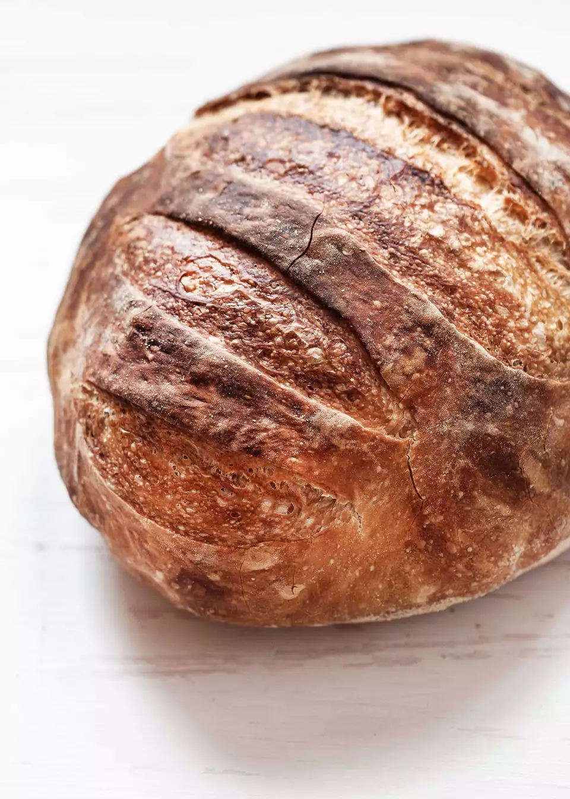

No Knead bread

No Knead Sourdough Bread
No need to knead! Only five minutes of hands-on time will yield a delicious, crusty, bakery-style loaf of bread. A long, slow rise builds flavor and texture so all you have to do is pop it in your Dutch oven, bake, and enjoy!
Ingredients
- 4 cups (480g) all-purpose flour, plus more for shaping the dough
- 1 teaspoon instant (“rapid rise”) yeast or active dry yeast dissolved in water
- 1 1/2 teaspoons salt
- 1 1/2 cups room temperature water
- About 1/4 cup cornmeal or all-purpose flour for the final rise
Steps
- Mix the dough
- Let the dough rise”
- Line a baking sheet with parchment paper
- Shape the dough
- Let the dough rise again
- Heat the ductch oven
- Score the dough
- Bake the Loaf
- Reduce the heat and continue baking
- Transfer the bread to a rack to cool